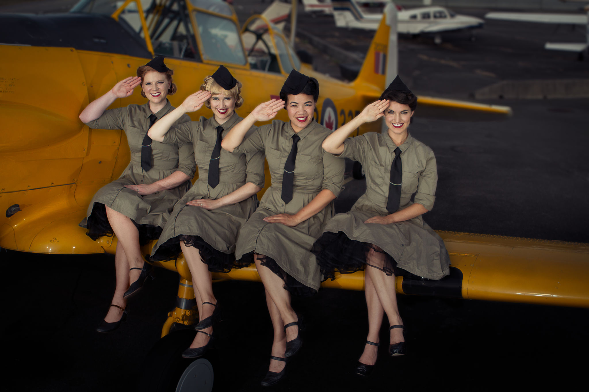

<div class="row">
  <div class="col-lg-12">

    <div class="row">
      <div class="col-md-12">
        
      </div>
    </div>

    <div class="row">
      <div class="col-sm-12 col-md-9 col-lg-8">
        <h3>Group Bio</h3>
        <p>Kick up your heels with The Lady Larks and their sweet swingin' vintage
        harmonies! From striking arrangements of Tin Pan Alley composers to covers
        of The Andrews Sisters, Manhattan Transfer and The Swingle Singers, this
        young quartet has been impressing their audiences since they came together
        in late 2010 as "The K Sisters". Since then, they have performed over 70
        concerts, released a seasonal CD "Jingle Jangle" (2010) and "Swinging with
        The K Sisters" (2011) in tribute to The Andrews Sisters and the music of
        World War II. </p>

        <p>With such instant chemistry, their lively choreography, energized
        musicianship and humour have helped them establish a loyal following in the
        short time that they have been together.   In addition to public
        performances, they have also performed for hundreds of veterans and their
        families at various branches of the Royal Canadian Legion and the George
        Derby Centre for Canadian Veterans of the Armed Forces.  In 2011, they also
        toured Interior BC and Vancouver Island, including veteran centers and
        seniors' facilities in their tour.  In the Lower Mainland, the quartet has
        performed with the Vancouver Thunderbird Chorus, Langley Barbershop
        Society, the Richmond Singers, the Vancouver Welsh Men's Chorus and many
        others.  Most recently the group decided to change their name and rebrand
        to "The Lady Larks", and were featured at the Harmony Arts Festival 2013 in
        West Vancouver.</p>

        <p>Each Lady Lark, an award-winning soloist and collaborative musician in her
        own right, brings multiple university degrees and over a decade of
        professional stage, radio and choral performing experience. Onstage,
        hopefully you will agree that there is plenty of virtuosity, energy and
        charm to knock your audience's socks off!  </p>
      </div>

      <div class="col-sm-12 col-lg-4 col-md-3">
        <div class="row">

          <div class="col-md-12 col-sm-4">
            <h3>Lineup</h3>
            <ul class="nodec">
              <li>Caitlin Beaupr&eacute; - Soprano </li>
              <li>Karen Lee-Morlang - Piano/Vocals</li>
              <li>Jennifer McLaren - Mezzo-soprano </li>
              <li>Eva Tavares - Soprano </li>
            </ul>
          </div>

          <div class="col-md-12 col-sm-4">
            <h3>Discography</h3>
            <ul class="nodec">
              <li>Swinging with The K Sisters (2011)</li>
              <li>Jingle Jangle! (2010)</li>
            </ul>
          </div>

          <div class="col-md-12 col-sm-4">
            <h3>Contact</h3>
            <ul class="nodec">
              <li><a href="mailto:info@ladylarks.com">info@ladylarks.com</a></li>
              <li>778-898-6487</li>
            </ul>
          </div>


        </div>
      </div>
    </div>
  </div>

</div> <!-- end container -->

